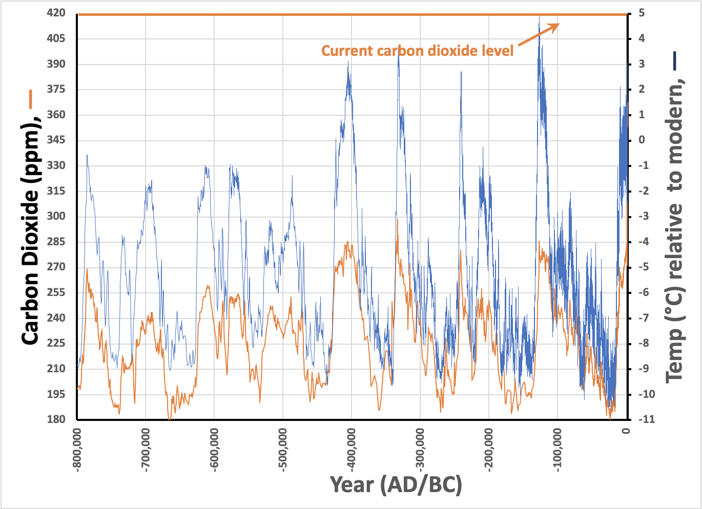

I’m Jonathan Burbaum, and this is Healing Earth with Technology: a weekly, Science-based, subscriber-supported serial. In this serial, I offer a peek behind the headlines of science, focusing (at least in the beginning) on climate change/global warming/decarbonization. I welcome comments, contributions, and discussions, particularly those that follow Deming’s caveat , “In God we trust. All others, bring data.” The subliminal objective is to open the scientific process to a broader audience so that readers can discover their own truth, not based on innuendo or ad hominem attributions but instead based on hard data and critical thought.
You can read Healing for free, and you can reach me directly by replying to this email. If someone forwarded you this email, they’re asking you to sign up. You can do that by clicking here .
Today’s read: 4 minutes.
It’s been a holiday week for me (and presumably for many of you) as this series transitions from problems to solutions. We’re now into July, and there are now seven weekly installments that could take an hour or more to read and digest, more than some new readers might want to invest. So I figure it’s time for a “Cliff’s Notes” summary. I suppose I could add a quiz, too, but I won’t!
Another motivation is that I’ve gotten a surprising amount of pushback on Facebook for simply posing the question “Is Global Warming Real?” in my first installment. You’d think I was asking a polarizing, political question rather than one that can be answered definitively with data! My point is, in scientific reasoning, “There is a question…” becomes black and white with data, and open questions become closed. And that’s one of them. Such is Science.
So, let’s recap what we’ve learned from the data.
-
“ Is Global Warming Real? ” Yep!
The Earth is getting warmer. We know we know because we’ve measured it. -
“ Carbon. Hero or Villain? ” Both.
Temperature levels and carbon dioxide rise together, and rising carbon dioxide levels account quantitatively for the observed temperature increase. [ Henry’s Law does not exonerate carbon. ] -
“ Where did all that carbon come from? ” Ancient geologic sources.
This conclusion is based on isotope signatures associated with “old” carbon and carbon produced by biological processes versus combustion. Thus, the amount of “extra” carbon in the atmosphere is consistent with human extraction and combustion of geologic carbon (coal, natural gas, and oil). -
“ Leading with Data. ”
Dave Keeling’s data on our atmosphere, carefully collected over decades without preconceived purpose, shows what is happening with carbon dioxide over days, years, and decades. If you want to understand the Science behind climate change, it’s a key dataset. -
“Earth is getting warmer. So what? ( Part 1 and Part 2 )” Climate change.
This last question projects a forecast rather than a fact. It relies on computer models developed by humans rather than true human knowledge. [As I quipped in the tag line for the last issue, “Models models everywhere And not a thought to think”. 1 ] I have a more dramatic take on the set phrase “climate change” than in the popular vernacular, which seeks to blame it for every severe weather event. To me, climate change means exactly what it says, widespread changes in persistent weather patterns on a global scale. It does not mean changes in intensity and frequency of weather extremes linked to a warming planet, changes that human civilization can adapt to relatively easily.
The most important data comes from ice cores in permafrost, which allows scientists to measure the condition of the Earth in the past. The data from these ice cores show a direct correlation between carbon dioxide in the atmosphere and temperature over several different periods of glaciation (“Ice Ages”) and interglacial periods (like our current climate). I’ve used the data set from EPICA in Antarctica in a few contexts. It’s a rich lode, so here’s the full picture:

Note how the carbon dioxide level and the temperature track one other, at least as a pattern. Before human civilization, carbon dioxide shifted between about 180 ppm and about 270 ppm, with temperature swings of -10°C to +5°C relative to our recent experience (the past 2000 years that we are most familiar with are wedged at the far right of the plot). We are now at carbon dioxide levels of 420 ppm and rising, a larger increase in carbon dioxide than happened at the end of all of the most recent Ice Ages!
It’s still a correlation, and we can only guess what caused carbon dioxide to fluctuate before the past 350 years of industrialization. Still, it’s not an irrational fear that the human combustion of geologic carbon has already changed the atmosphere enough to create the conditions for a dramatic climate change. And that’s not a conclusion that requires a model.
From this point forward, I will be focusing on possible solutions to excess carbon dioxide in the atmosphere. As in previous releases, I’ll be looking to history, and where possible, data to support the viability of different approaches. Since it’s not a problem we’ve solved in the past, there is ample room for debate.
For those that may miss the reference, it’s a twist on “Water water everywhere and not a drop to drink,” which is a modernized couplet from Samuel Taylor Coleridge’s “ Rime of the Ancient Mariner ” (1798). Fittingly, this is a poem that recounts the tale of a sailor exploring Antarctica. It is also the source of the idiom “an albatross around one’s neck.”